ART / RUBBLE SQUARE / FIRST PHASE-2 ASSET · candidate, owner visual review pending
Ochre plaster frontage
Seven placements, zero positive trial-warm allowance. Six unlit windows, five door boards, six brick exposures and one blank notice. Collision and lamp socket preserved.
Evidence, scripts, measurements and open gaps · Machine-readable comparison and artifact hashes · Open the live asset lab · Open the square
Hero beside actual model
The model is an actual asset-lab render at eye height. The full fixed camera set follows below. Five shared details: steep gable, six two-pane windows, five-board door, six brick exposures, blank notice. The hero’s street curb is context; the collider is unchanged.
 Generated hero reference
Generated hero reference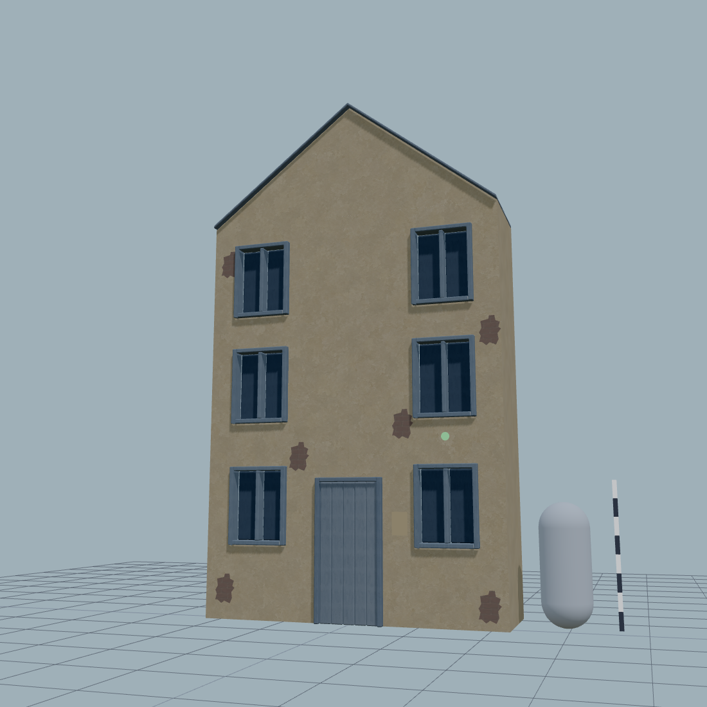
Actual GLB in the browser · supplemental 1.7 m camera · 45° field of viewGrey candidate beside ochre revision
Only the plaster image changed. Owner approved at ae6a31a. The full-asset trial pair retains one positive scene pixel at one instant, below the recorded 0.001 pp resolution. The plaster-only diagnostic is zero at all three.
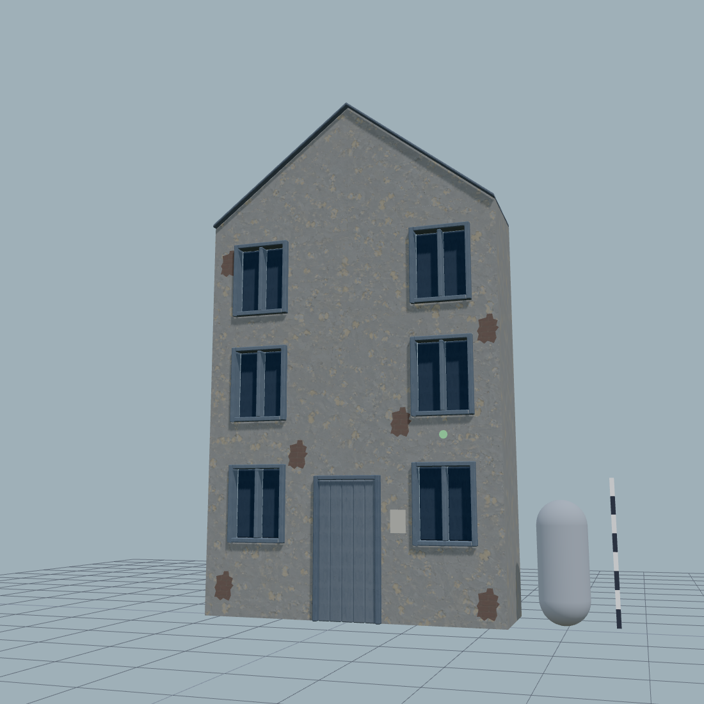
Retained grey candidateOchre revision · same camera
 Current 1024 plaster atlas
Current 1024 plaster atlas
All four direction frames
Original direction references, with the caveats recorded in the concept README. No marks or portraits from these frames were copied into the asset.
 Dusk · plaster, exposed brick, theatre staging
Dusk · plaster, exposed brick, theatre staging
 Trial · blue architecture, attention on the platform
Trial · blue architecture, attention on the platform
 Day · quiet materials and damage as daily context
Day · quiet materials and damage as daily context
 Figurine finish · proportion and paint only
Figurine finish · proportion and paint only
Reference contract
Original generated files, displayed by the browser without modifying their pixels. Native sheet measurement and rejected attempts are linked in the packet.
 Accepted native sheet · three equal panels · 80 px/m
Accepted native sheet · three equal panels · 80 px/m
 Plaster / brick / timber-and-soot assignment
Plaster / brick / timber-and-soot assignment
Six fixed asset-lab captures
 Front and scale
Front and scale
 Three-quarter
Three-quarter
 Side
Side
 Fixed game camera · intentionally close, roof outside frame
Fixed game camera · intentionally close, roof outside frame
 Facade silhouette · not the later citizen identification test
Facade silhouette · not the later citizen identification test
 Original collision volume inside the taller visual gable
Original collision volume inside the taller visual gable
Actual square · standard measurement camera
| State | Warm HUD | Warm scene | Calls | Triangles |
|---|
| Day | 5.895% | 5.297% | 381 | 74389 |
| Dusk | 19.446% | 20.893% | 381 | 74389 |
| Trial | 9.673% | 9.166% | 389 | 77677 |
Source: scripts/capture-rubble-baseline.mjs and unchanged rubble-pixels classifier. Full-asset trial pairs: scene 0, 0, +1 pixel; HUD −3, −3, −2 pixels. Ochre-versus-grey pairs: zero trial pixels throughout. The historical strict failure is closed by the owner ruling.
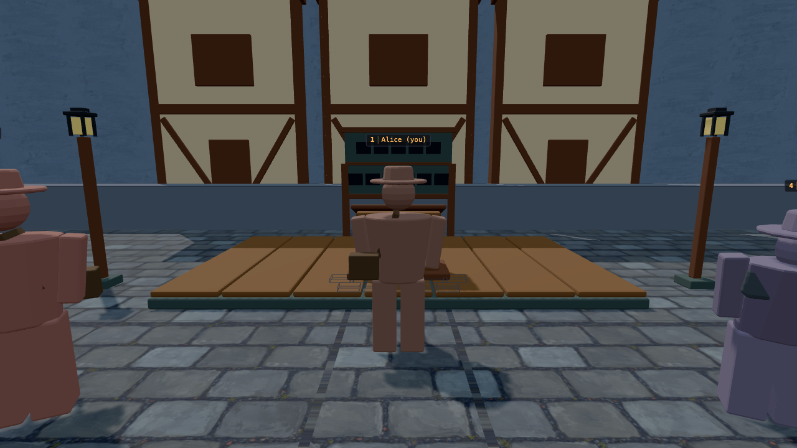
Day before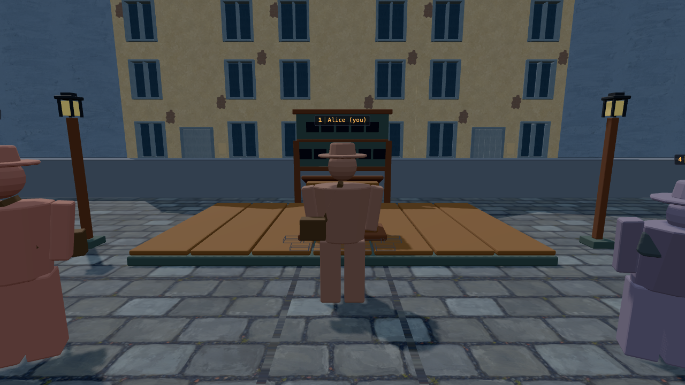
Day candidate
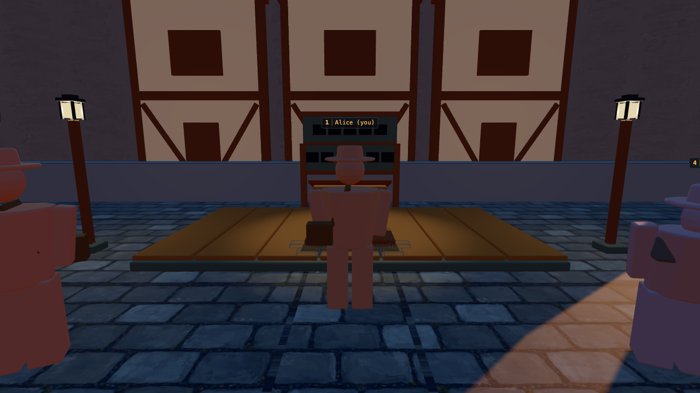
Dusk before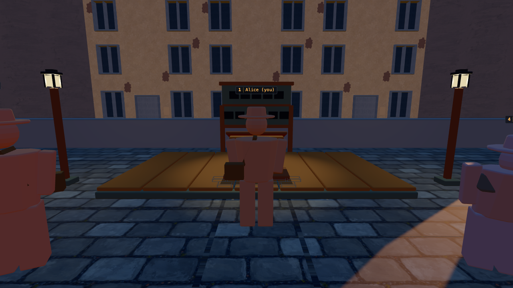
Dusk candidate
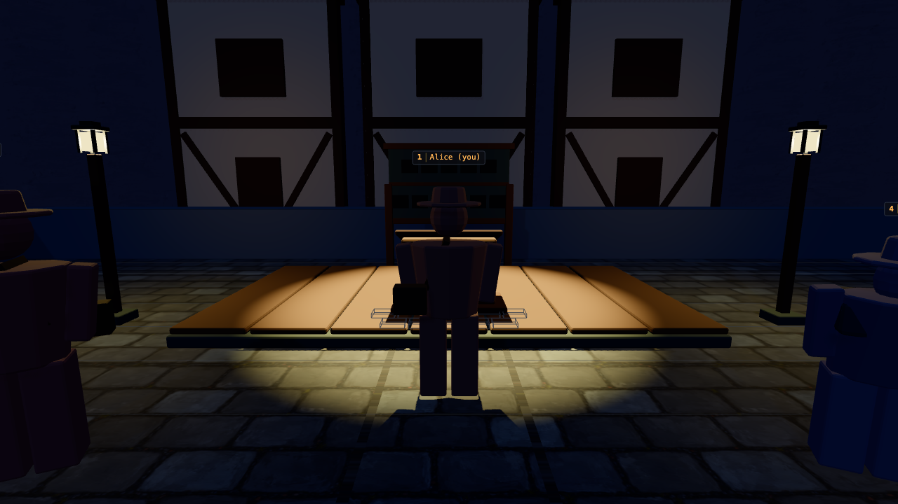
Trial before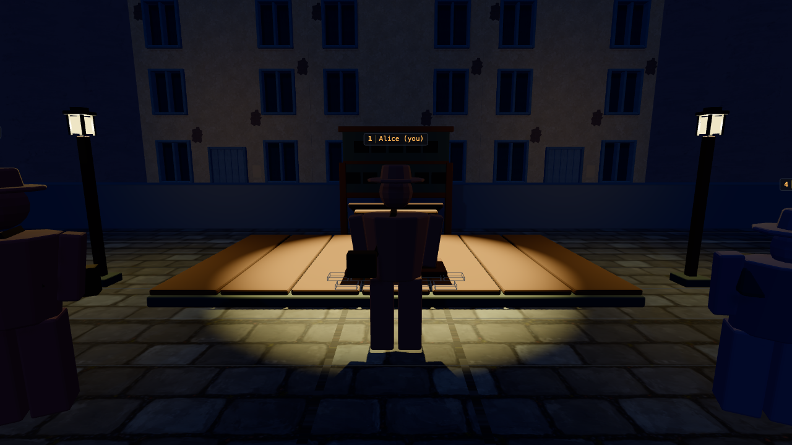
Trial candidate
Supplemental eye-height views
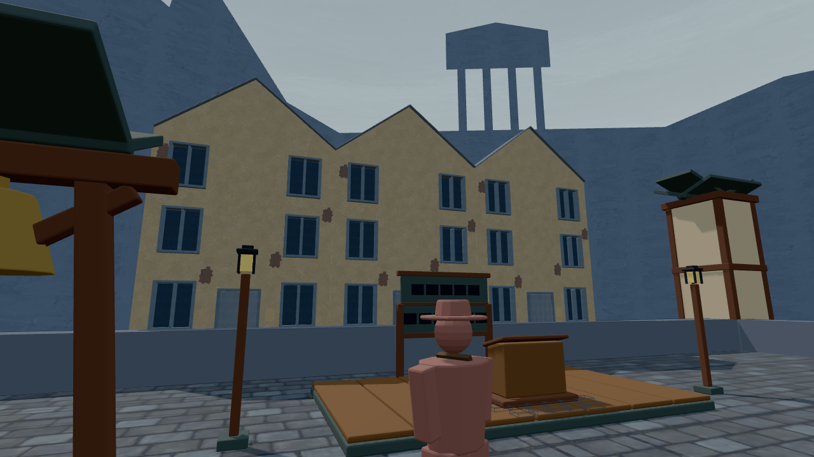
Day
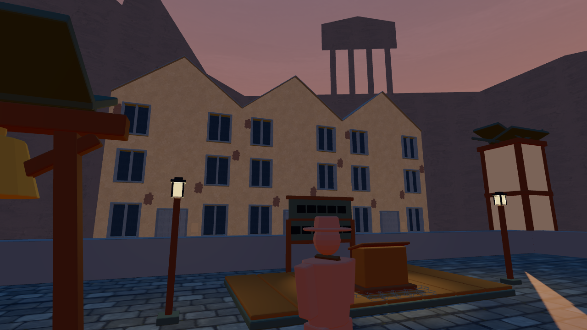
Dusk · existing gradient retained until phase 5
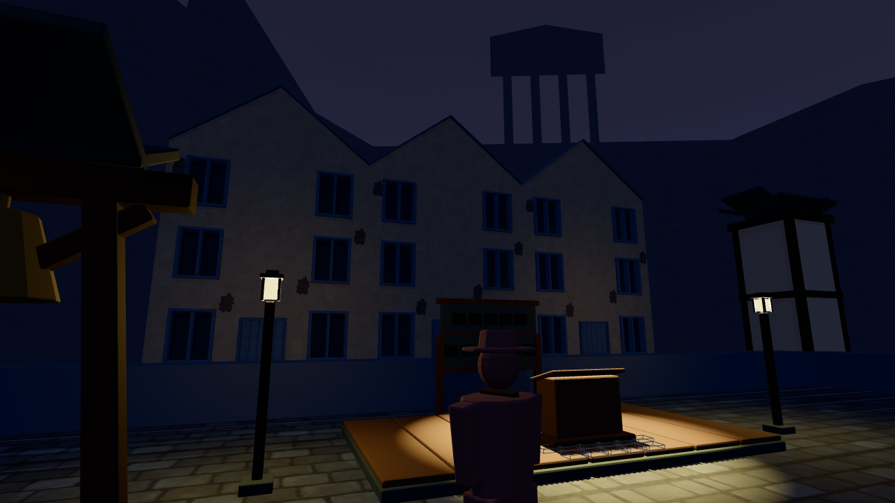
Trial · near-black visibility remains a phase-5 target
Open: remaining phase-2 assets, later furniture and citizens, lighting retune, human pasted-on test and the final evidence packet. Green tests do not close those visual reviews.